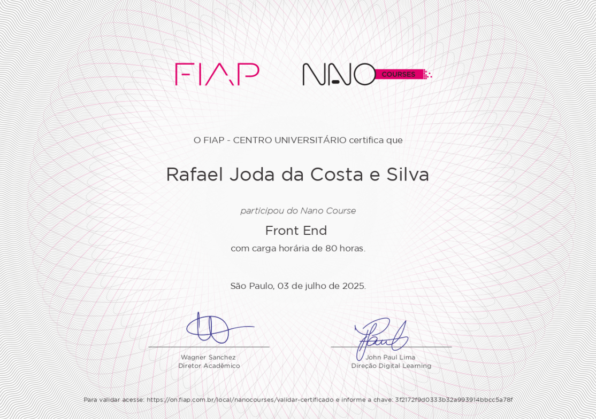
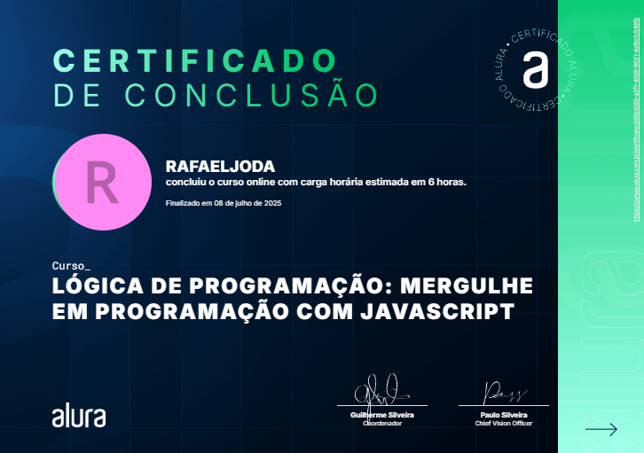
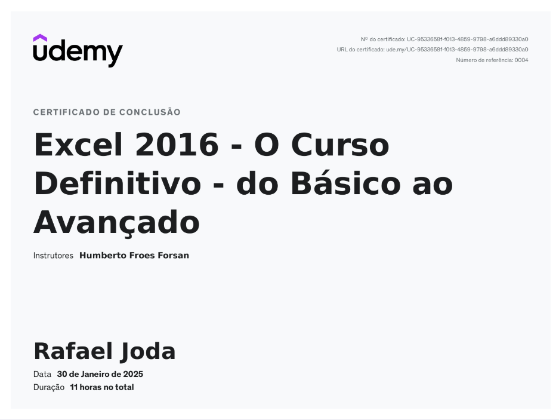
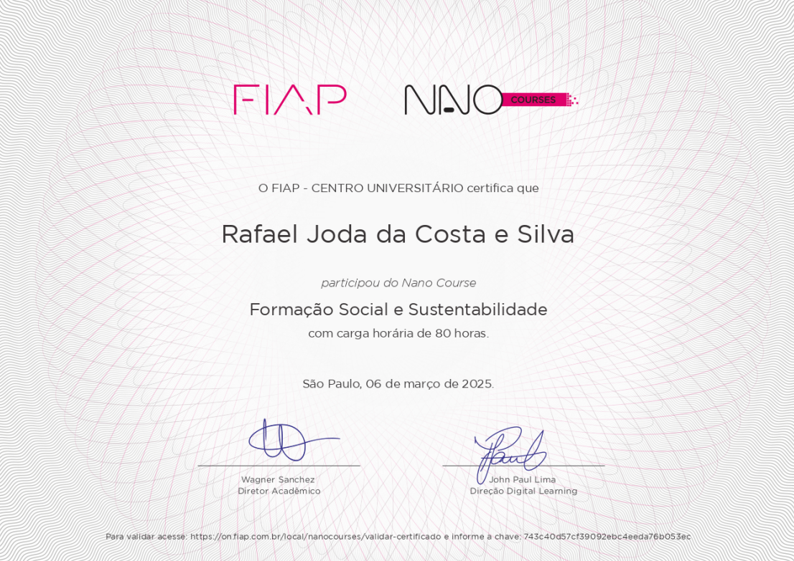
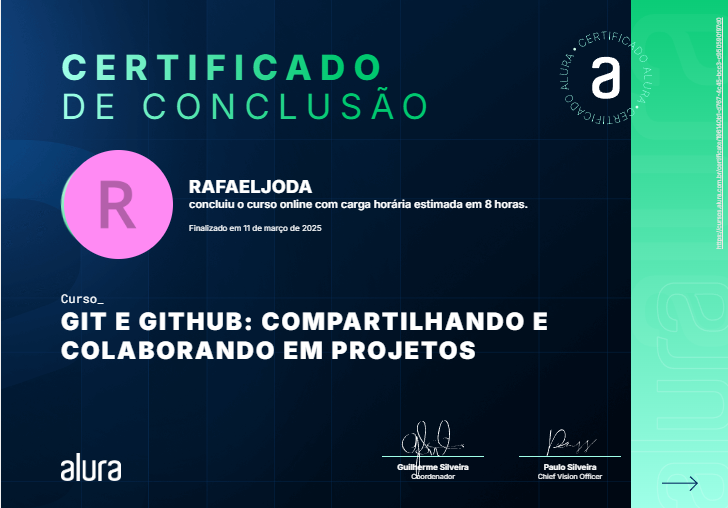
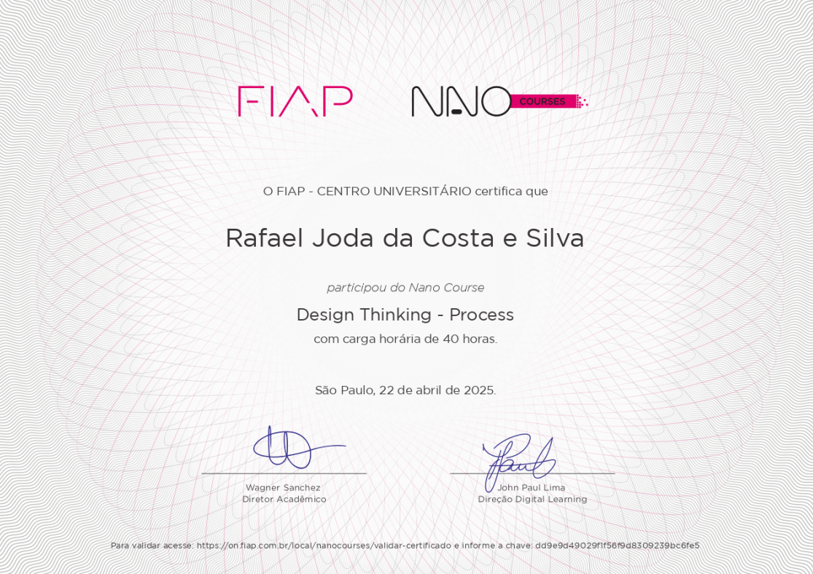
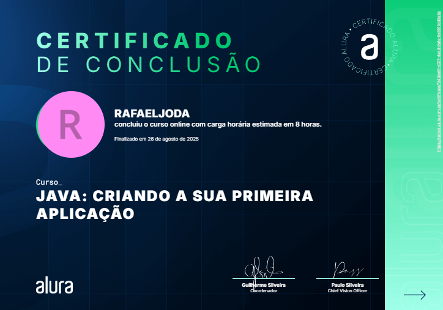

Ampliar ↗FORMAÇÃO COMPLEMENTAR
Meus certificados.
Cursos e estudos que acompanham minha formação em Engenharia de Software.
7 certificados
Ampliar ↗
Ampliar ↗Udemy03
Excel Avançado
Planilhas, dashboards e análise de dados.
Sem link de validação cadastrado.

Ampliar ↗FIAP04
Formação e Sustentabilidade
Desenvolvimento de competências para formação e sustentabilidade.

Ampliar ↗Alura05
Git e GitHub: compartilhando e colaborando em projetos
Versionamento de código e colaboração em projetos.

Ampliar ↗
Ampliar ↗Alura07
Java: criando a sua primeira aplicação
Fundamentos para criar a primeira aplicação em Java.